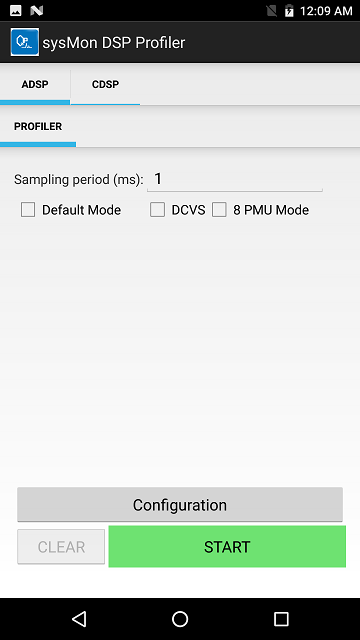

sysMon DSP Profiler
The sysMon DSP Profiler is an Android UI application used to profile the DSP workload.
This UI application uses FastRPC to communicate with the SysMon profiler service on the targeted DSP. This application can assist with measuring performance, debugging performance related issues, and identifying possible optimizations by collecting the following metrics:
- Clocks voted for
- Resource usage
- Load distribution across available hardware threads
- Load on processor
- Bus bandwidth metrics
- Other profiling metrics
This page captures the steps to set up and use the sysMon DSP Profiler and ways to analyze the captured profiling data.
Please refer feature matrix for targets supporting the sysMon profiler.
Setup
Install $HEXAGON_SDK_ROOT/tools/utils/sysmon/sysMon_DSP_Profiler_V2.apk on the device connected to the host machine by running following ADB command:
adb install -g sysMon_DSP_Profiler_V2.apk
Interface
The home page of the sysMon profiler displays as follows:

You can choose from different modes of profiling. All these options map to the options supported and described for the sysMonApp profiler service.
DCVS Mode option
Select this checkbox to enable the DSP DCVS mode, which can adjust DSP core and bus clocks dynamically for the profiling duration.
Default Mode option
In this mode, a fixed set of performance metrics (eight PMU events) will be monitored. By default, the sampling period is either 1 or 50 milliseconds. The profiler generates a packet at the end of each sampling period with the performance metrics captured in the window.
You can also specify a sampling period in multiples of one millisecond to override the sampling period for a fixed set of performance metrics (eight PMU events). If DCVS mode is selected, specifying a sampling period smaller than 50 milliseconds will result in a 1 millisecond sampling interval; specifying a sampling period greater or equal to 50 milliseconds will result in a 1 or 50 millisecond sampling interval as dictated by the DCVS algorithm.
For more details about the Default mode, see the sysMonApp profiler service documentation.
User Mode option
If the Default mode is not selected, User mode is enabled instead. In User mode, specify the PMU events to be captured by clicking the Configuration button:

The following table provides a brief description of all supported PMU events:
| ID | PMU event |
|---|---|
| 0x03 | MPPS |
| 0x03 | pCPP |
| 0x04 | DMTV2 |
| 0x07 | DMTV3 |
| 0x08 | SMT |
| 0x2A | Instructions executed Per Second(IPS) |
| 0x03 | Packets executed Per Second(PPS) |
| 0x7F | L2 Fetch Miss |
| 0x11 | IU Stall |
| 0xE9 | DU Cache Stall |
| 0x41 | AXI 32-Byte Line Read |
| 0x43 | AXI 32-Byte Line Write |
| 0xCE | AXI 64-Byte Line Read |
| 0xCF | AXI 64-Byte Line Write |
| 0x3F | AXI 128-Byte Line Read ( V66 and beyond only) |
| 0x46 | AXI 128-Byte Line Write ( V66 and beyond only) |
| 0x44 | AHB Read BW |
| 0x45 | AHB Write BW |
| 0x3B | 1-Thread Active(%) |
| 0x3C | 2-Thread Active(%) |
| 0x3D | 3-Thread Active(%) |
| 0x3E | 4-Thread Active(%) |
| 0x25 | 1-Thread CPP |
| 0x26 | 2-Thread CPP |
| 0x27 | 3-Thread CPP |
| 0x2F | 4-Thread CPP |
| 0x118(v66), 0x112(v68) | HVX Thread MPPS |
| 0x11D(v66), 0x11A(v68) | HVX L2 Load Miss |
| 0x106(v66), 0x103(v68) | HVX Stall Cycles |
Captured performance metrics are postprocessed and displayed on the UI continuously with a refresh rate of one second.
For more details about the User mode, see the sysMonApp profiler service documentation.
8-PMU Mode option
This option allows you to configure four PMU events or eight PMU events.
- If the checkbox is not selected, the option is set for four PMU events (default).
- Select the checkbox for eight PMU events.
Also, the 8-PMU Mode checkbox is selected automatically if both the Default and DCVS modes are not selected.
Data collection
As explained in the sysMonApp profiler service documentation, the sysMonApp profiler stores raw profiling data in the /sdcard or /data folder on the device:
- For the aDSP, the file name is `sysmon.bin
- For the cDSP, the file name is
sysmon_cdsp.bin - For the sDSP, the file name
sysmon_sdsp.bin
You can retrieve these files with an adb pull command. For example, the following command retrieves aDSP profiling data:
adb pull /sdcard/sysmon.bin <destination directory>
Data postprocessing
To postprocess the profiling data, see the instructions on how to use the sysmon parser.
Command line usage
The sysMon DSP Profiler can be invoked from the command line:
adb shell am start -n com.qualcomm.qti.sysmonappExternal/com.qualcomm.qti.sysmonappExternal.AdspProfiler [-e <option> <value>]
| Option | Description |
|---|---|
| q6 | Select the DSP to profile. 0 (default) for aDSP, 2 for sDSP, 3 for cDSP. |
| defaultMode | Select profiling mode. 0 for User mode, 1 (default) for Default mode. |
| samplingPeriod | Specified sampling period in milliseconds. By default, 1 ms in User mode, and a combination of 1 ms and 50 ms in Default mode. |
| dcvsMode | Set DCVS mode. 0 to disable DCVS during profiling, and 1 to enable DCVS. By default, DCVS is enabled when Default mode is selected; otherwise, it is disabled. |
| pmuMode | Set PMU mode. 0 to run in 4-PMU mode, and 1 to run in 8-PMU mode. |
For example, the following command will open the sysMon DSP Profiler application with the Profiler UI displayed on the screen:
adb shell am start -n com.qualcomm.qti.sysmonappExternal/com.qualcomm.qti.sysmonappExternal.AdspProfiler -e q6 2
Once the sysMon DSP Profiler application is opened, run the pair of start and stop commands any number of times on the given DSP.
-
The following command will start the profiler and also allow you to set options:
adb shell am broadcast -a com.qualcomm.qti.sysmonapp.RUN_EXT_FROM_ADB -e startProfiler 1 -e q6 2 -e defaultMode 1 -e samplingPeriod 10 -e dcvsMode 0 -n com.qualcomm.qti.sysmonappExternal/com.qualcomm.qti.sysmonappExternal.BootCompleteReceiverExternal` -
The following command will stop the profiler:
adb shell am broadcast -a com.qualcomm.qti.sysmonapp.RUN_EXT_FROM_ADB -e stopProfiler 1 -e q6 2 -n com.qualcomm.qti.sysmonappExternal/com.qualcomm.qti.sysmonappExternal.BootCompleteReceiverExternal
Finally, you can close the sysMon DSP Profiler application with the following command:
adb shell am force-stop com.qualcomm.qti.sysmonappExternal
NOTE: To run the profiler on a different DSP, close the application and re-open it with a different DSP value. The start and stop commands also must use the same new DSP value.